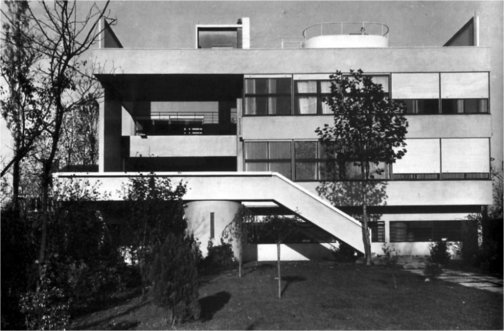
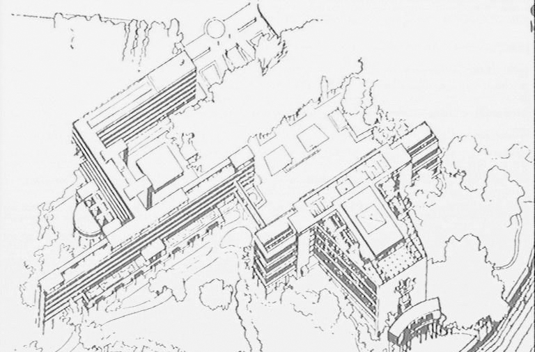
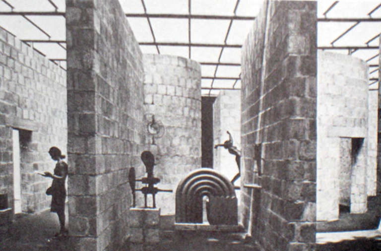
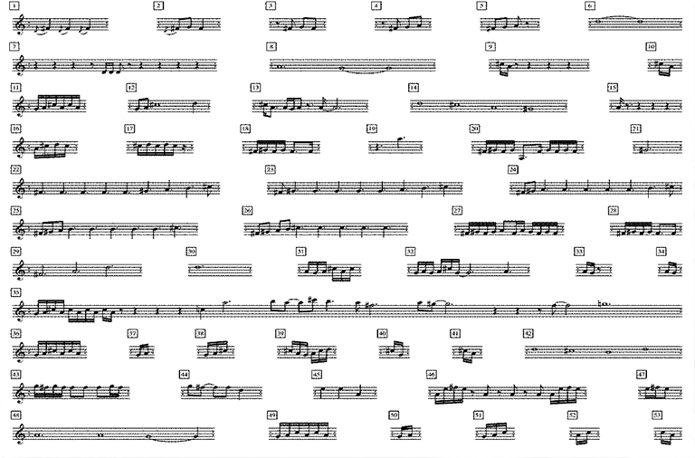

stratification
katrina galea
‘stratum’
(layer / cover)
+ ‘ficere’
(make)
= a creation of layers
An action through which a certain level of organisation of layers, or elements, is achieved.
Social Stratification: the allocation of individuals and groups according to various social hierarchies of differing power, status, or prestige.
Geological Stratification: layering that occurs in most sedimentary rocks and in those igneous rocks formed at the Earth’s surface, as from lava flows and volcanic fragmental deposits.
Material Stratification: the superimporition or organisation of a material to build an architectural element.
Data Stratification: sorting data, people, and objects into distinct groups or layers. It is a technique used in combination with other data analysis tools.
Physchoanalytical Stratification: interaction between the conscious, unconscious and subconscious.
Spatial Stratification:
A sequential layering, or succession, of spaces.
The space in between assigned layers is the most vital element, rather than the actual elements in organisation. This space may not necessarily refer to the contained area in between the elements, but also as the potential to formulate relations between the stratified elements.
The position or order of each element as well as the invidivual may give information about the strata
Stratification v Striation : Striation relates to the characteristics of elements in some organisation, whereas stratification relates mostly to the characteristics of the organisation of the said elements. When Rowe & Slutzky refer to a ‘system’ of striations, they are essentially referring to the stratification of striated elements.
Stratification can be said to be composed of two principles: the creation of some form of structure, i.e. a specific, rigid way of combining elements into a whole, and as a process of narration in order to achieve specific, perhaps time-dependent, effects on the user or observer.
This leads to relationships being established between structure and experience - between the physical experience of architectural spaces and the field of abstract relations within.
rigidity and clarity in the structure, fluidity in interpretation / navigation within
a certain level of ambiguity offers itself in between the structured elements, allowing for multiple readings/modes of navigation.
"[Stratifications], devices by means of which space becomes constructed, substantial, and articulate, are the essence of… phenomenal transparency” - Rowe & Slutzky
Villa Stein de-Monze, Le Corbusier
Composed of a series of planes defining the spaces interlocked within the villa. A flat-roofed, concrete structure on pillars featuring an open plan, smooth transitions independent of other structural elements and showcasing almost ceremonial route from the door to the interior and ending on the roof of the house.
"Each of these planes is incomplete in itself or perhaps even fragmentary; yet it is with these parallel planes as points of reference that the facade is organized, and the implication of all is of a vertical, layerlike stratification of the interior space of the building, a succession of laterally extended spaces traveling one behind the other." - Rowe & Slutzky
Le Corbusier purposefully included design features that act as points of reference that imply spaces not immediately discernible.
The villa's stratified planes appear to stretch out and expand the various constituent layers of its elevation. One can also simultaneously perceive the whole arrangement of the elevation from a singular viewpoint.
The villa’s irregular facade and broken grid present enough detail for the viewer to construct an image of their own. A suggestion is provided for what the volume of the space might look like behind the opaque walls, as the viewer is allowed to conjure up hidden spaces.
League of Nations, Le Corbusier
The ordered sequence of the axial approach towards the auditorium is met by unexpected disruptions through a series of ‘obstacles’ presented along the way (e.g. blocks of trees), which fragment the preconceived structured approach. These allow the user of the space to observe other relations within the architecture.
The project consists of elements and functions that lead to an extended organization, with long blocks defining a system of striations
A sequential layering of spaces - a linear hierarchy of fragmented spaces and vistas.
Architecture is not conceived in plan, but rather in terms of the succession of spaces, which achieves a continuous space. one is allowed to ‘journey’ through the space creating a spatial continuum of the layered spaces.
“User becomes successively aware” of new relations
the possibility of establishing new relations between elements of organisation while physically passing through the space is what leads to a phenomenal transparency.
Sonsbeek Pavilion, Aldo van Eyk
Six parallel walls almost 4m high are placed with a distance of 2.5m from each other. The way the walls bend forming semicircular spaces and the sudden cuts transform this simple pattern in a complex spatial device. Sculptures are placed within and outside of the structure. There is no predictability for viewers; they unexpectedly encounter curved or straight walls with the statues often and up-close.The walls support a transparent roof, through which the diffused light enters - but the way the walls are organised takes all the focus from the roof.
Parameters are set for the position and form of the walls. However there is no predictability for the users walking through the space. There is a difference between what one sees (the structure of the pavilion is very clearly defined) and what one knows (the elements of surprise as one ventures through and around the space).
Ambiguity lies in the organisation of certain characteristics which define the elements, i.e. the opening and the semi-circular enclosure. one can only know what lies ahead by physically passing through.
In C, Terry Riley
Musical fragments (53) for an indefinite number of performers, which may be repeated an arbitrary number of times. Musicians pick one fragment and can enter / leave at any point of the piece, but keeping the same tempo as the rest of the group: there is a common pulse. The resulting piece is always different - it has no set duration and no set number of performers.
A prime case of formalism: a firm set of rules are developed in advance of inscribing real-time flow of a piece. Consistency/order are ensured in the parameters set. Once in notated form, these elements are fixed.
All players devote themselves to the greater good of the piece. They listen to their interaction with their neighbours but also hear the influence of their actions on the total work. While all the players have the flexibility to enter/exit, repeat their own-chosen piece for as long as they desire, it is still very different from the conventional (jazz) kind of improvisation. The melodic piece as well as the rhythm are already set.
Although the melodic part is predetermined, an element of the composition is left to chance. The choices that performers make give shape to the piece via repetition, entries/exits and the dynamics between them. A greater degree of complexity exists. Fluidity/indeterminacy of the piece is for both audience as they hear the complete piece and performers as they navigate through the work.
the ‘phenomenal’ transparency that Rowe and Slutzky refer to needs further development in definition.
Stratification can lead to varying degrees of phenomenality which are not related to any physical or optical qualities (what they define as literal), and therefore what they refer to as phenomenal transparency could be redefined as non-literal, which can be either perceptive transparency or noumenal.
Nevertheless, it can be said that phenomenal transparency is achieved through rigidity and clarity in the structure, and the fluidity in interpretation / navigation within, which is essentially what the operational principle of stratification is about.